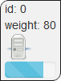
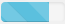
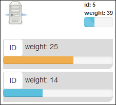

The server representation:

As you can see, we have the id of the server, its weight and a progressbar.

This progressbar gives you two différent informations:
- The size is for the server's weight % compared to the heaviest
- The color is for the imbalance of the server compared to the worst imbalance
The server deployed representation:

To deploy the server and manipulate its shards, just drag'n'drop it to the bottom dashed zone.
In deployed representation we have further informations.
- The stripped progressbar is exactly the same as in non-deployed server representation, it indicates the same informations
- Concerning the shard's progressbar, it only shows one information, the weight % of the shard compared to the server's weight